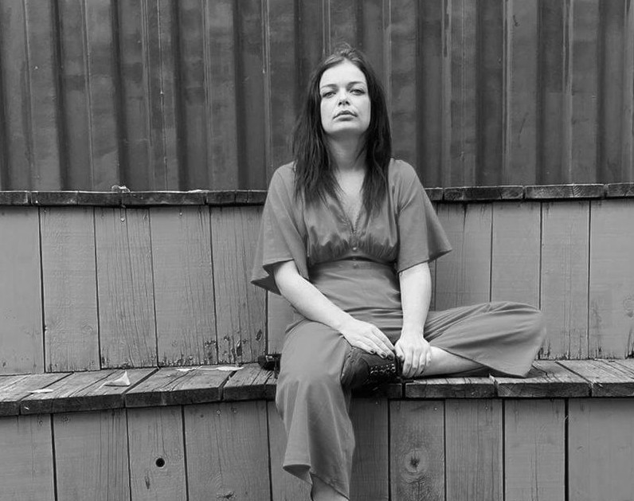

Hi, I'm Juliette.
My Story
I am a Research analyst turned UX/UI Designer located in Athens (Greece) and Berlin (Germany). I have a degree in Marketing and Communication. For the past 5 years, have worked as a Research Analyst for a market research company in the fund industry. There I develoed a growing interest in understanding people and their vision, which I already had grown while working in customer service.
I felt frustrated as I needed a way to pair that with a creative approach, as I had always been passionate about design and visual arts. I started looking more into UX Design and realized it was the perfect fit to combine existing skills and interests.
Apart from designing, another passion is music. I spend a lot of free time researching new music and reading about it. I also love analog photography, mostly when travelling.
Skills
- User Research
- User Personas
- User Flows
- Prototyping (Low, Mid, High Fidelity) Frontend Development
Tools
- Figma
- Adobe XD
- Photoshop
- Balsamiq Marvel